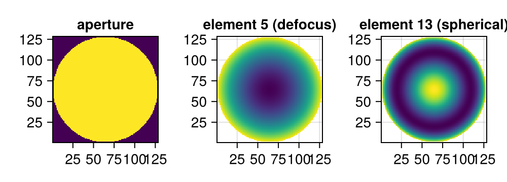
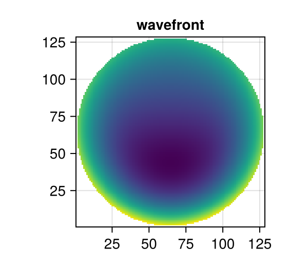
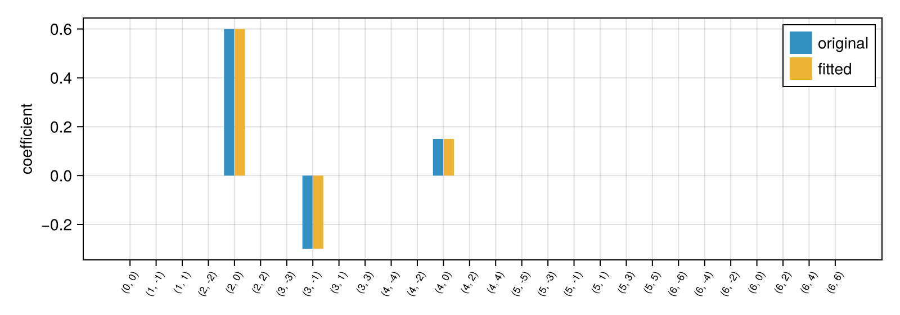

using PhaseBases
using CairoMakie
using PhaseBases: decompose ## disambiguate from Makie/GeometryBasics `decompose`
CairoMakie.activate!(; type="png")Getting Started with PhaseBases.jl
PhaseBases provides types for representing optical phase aberrations as linear combinations of basis functions (primarily Zernike polynomials), together with efficient decomposition and composition routines. This page walks through the core workflow.
1 — Create a Zernike Basis
A ZernikeBW stores all Born & Wolf–normalized Zernike polynomials up to a given radial order, pre-evaluated on a square grid. Elements are stored in OSA order, so element k is the polynomial with OSA index k - 1.
zbas = ZernikeBW(128, 6)
length(zbas) ## number of polynomials28The basis carries its aperture, plotting mask, element norms, and dual elements (pseudo-inverse) used for accurate decomposition.
fig = Figure(; size=(500, 180))
ax1 = Axis(fig[1, 1]; title="aperture", aspect=DataAspect())
ax2 = Axis(fig[1, 2]; title="element 5 (defocus)", aspect=DataAspect())
ax3 = Axis(fig[1, 3]; title="element 13 (spherical)", aspect=DataAspect())
heatmap!(ax1, (aperture(zbas))')
heatmap!(ax2, (elements(zbas)[5] .* mask(zbas))')
heatmap!(ax3, (elements(zbas)[13] .* mask(zbas))')
fig
2 — Describe a Wavefront (ModalPhase)
A ModalPhase stores coefficients in a basis lazily — the gridded array is produced only when you call collect. Coefficients below are indexed by element position (1-based).
coef = zeros(length(zbas))
coef[5] = 0.6 ## defocus
coef[8] = -0.3 ## coma
coef[13] = 0.15 ## spherical
wf = ModalPhase(coef, zbas)
fig2 = Figure(; size=(300, 260))
ax = Axis(fig2[1, 1]; title="wavefront", aspect=DataAspect())
heatmap!(ax, (collect(wf) .* mask(zbas))')
fig2
3 — Decompose an Array Back into Coefficients
Given a 2D phase array, decompose fits the basis and returns a coefficient vector. Round-tripping should reproduce the original.
arr = collect(wf)
fitted = decompose(arr, zbas)
fig3 = Figure(; size=(800, 280))
ax = Axis(
fig3[1, 1];
ylabel="coefficient",
xticks=zerniketicks(zbas), ## tick labels show the (n, m) indices
xticklabelrotation=π / 3,
xticklabelsize=9,
)
barplot!(ax, coef; label="original", n_dodge=2, dodge=1)
barplot!(ax, fitted; label="fitted", n_dodge=2, dodge=2)
axislegend(ax)
fig3
The project shortcut composes the fitted coefficients directly:
residual = arr .- project(arr, zbas)
maximum(abs, residual) ## should be ≈ 01.9984014443252818e-144 — Modal ↔ Zonal Conversion
ModalPhase (coefficients) and ZonalPhase (2D array) are the two concrete Phase subtypes. Convert freely between them.
zp = ZonalPhase(wf) ## ModalPhase → ZonalPhase (materializes)
coefficients(zp)[64, 64] ## direct pixel access-0.4546863167940483Going back requires a decomposition step:
wf2 = ModalPhase(decompose(coefficients(zp), zbas), zbas)
maximum(abs, collect(wf2) .- collect(wf)) ## ≈ 01.9984014443252818e-145 — Summary
| What you want | How |
|---|---|
| Create a basis | ZernikeBW(N, order) |
| Describe a wavefront | ModalPhase(coef, basis) |
| Evaluate on grid | collect(phase) |
| Fit an array | decompose(arr, basis) |
| Project and get residual | project(arr, basis), decompose_and_complement |
| Convert modal → zonal | ZonalPhase(phase) |
| Symbolic (grid-free) phase | SymbolicZernikePhase(coefs, Fringe) |
See the other tutorials for Zernike basis details, phase arithmetic, pixel-based bases, and symbolic Zernike phases.
This page was generated using Literate.jl.